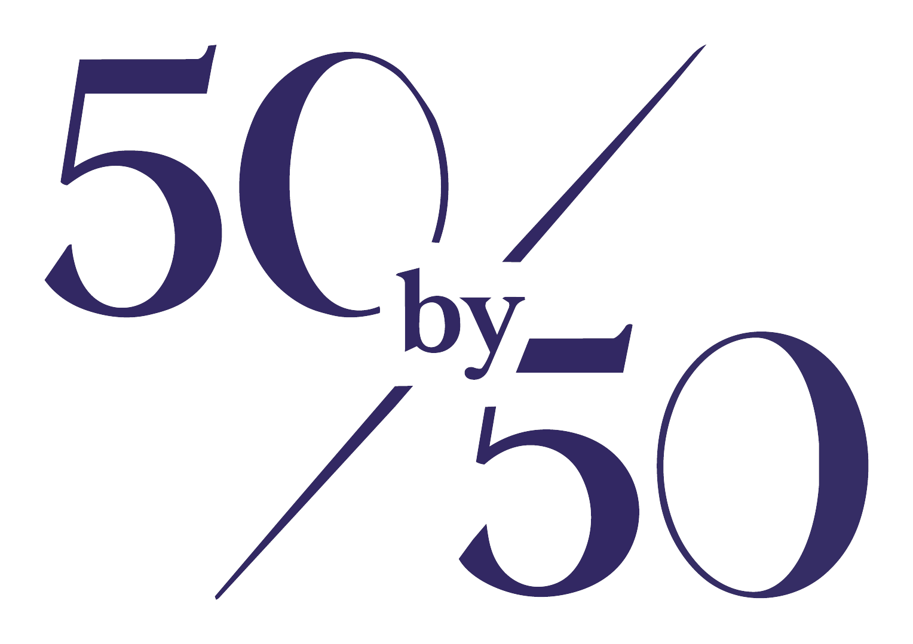

OBSERVATION PLAYBACK

Resonance Walk
-星儀社観測記録-
観測をはじめる
ログ帳
設定
導線
50by50 — FIFTY BY FIFTY
──
OBS.07 / --:--
SIG
REC 0/5
◀
▶
調査
──
──
CLOSE
OBSERVATION MAP
閉じる
● 記録回収済み ○ 未回収
LOG ARCHIVE ／ ログ帳
閉じる
SETTINGS ／ 設定
閉じる
効果音
BGM
観測手順
表示
観測記録の初期化
初期化
50by50 Resonance Walk v1.4 SOUNDTRACK
Tier 0–1
LINKS ／ 導線
閉じる
GUIDE ／ 観測手順
閉じる
移動
行き先をタップ、または左下の◀▶。PCは ← → か A・D
調査
床の光輪に近づくと右下の「調査」が点灯。押すと記録を確認する。PCは E
記録
観測記録は全5件。回収状況は右上の REC 表示とログ帳で確認できる
解放
記録を集めると、星図マップ（右上）に新しい座標が開く
完了
全5件の回収で観測は完了する
観測をはじめる
OBSERVATION COMPLETE
閉じる
RECORDS 5 / 5
全記録の回収を確認。観測は完了した。
50by50 — OBSERVATION PLAYBACK ／ この先の記録は、各媒体に。
位相ノイズを検出